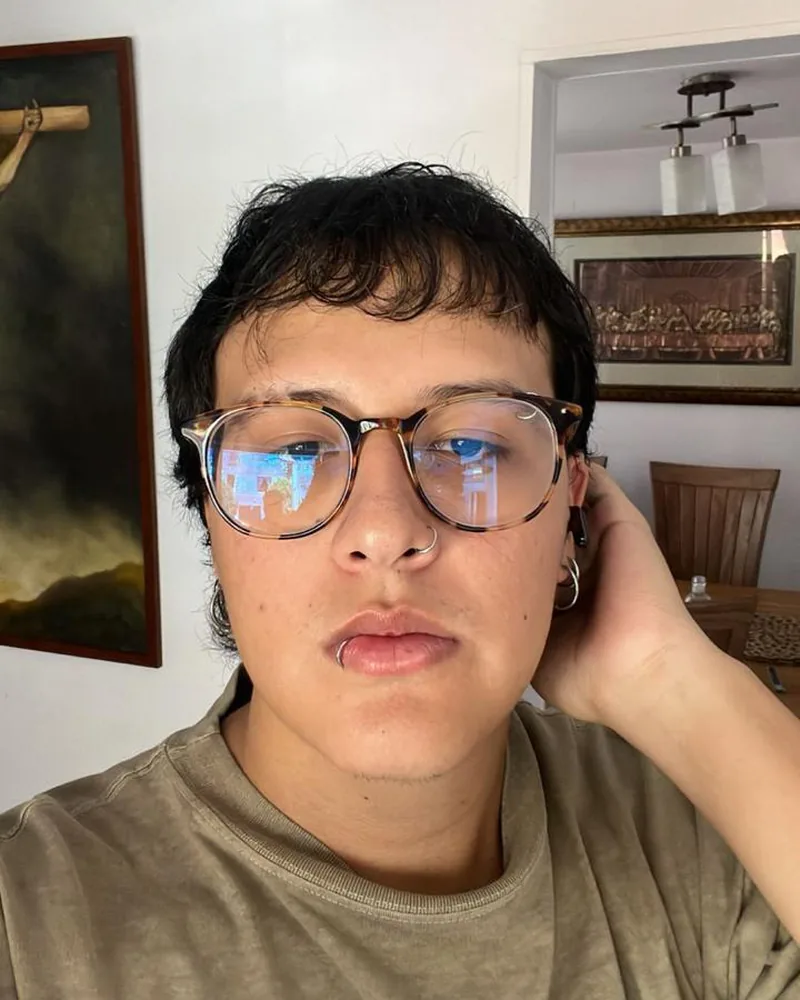
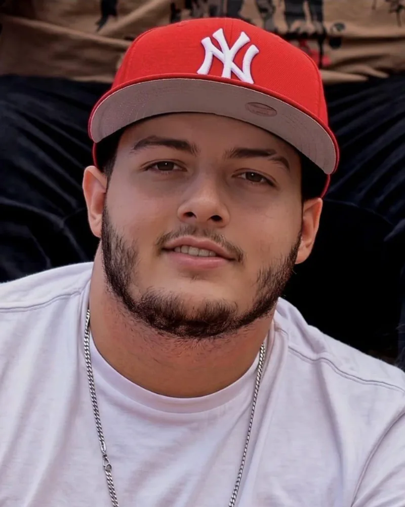
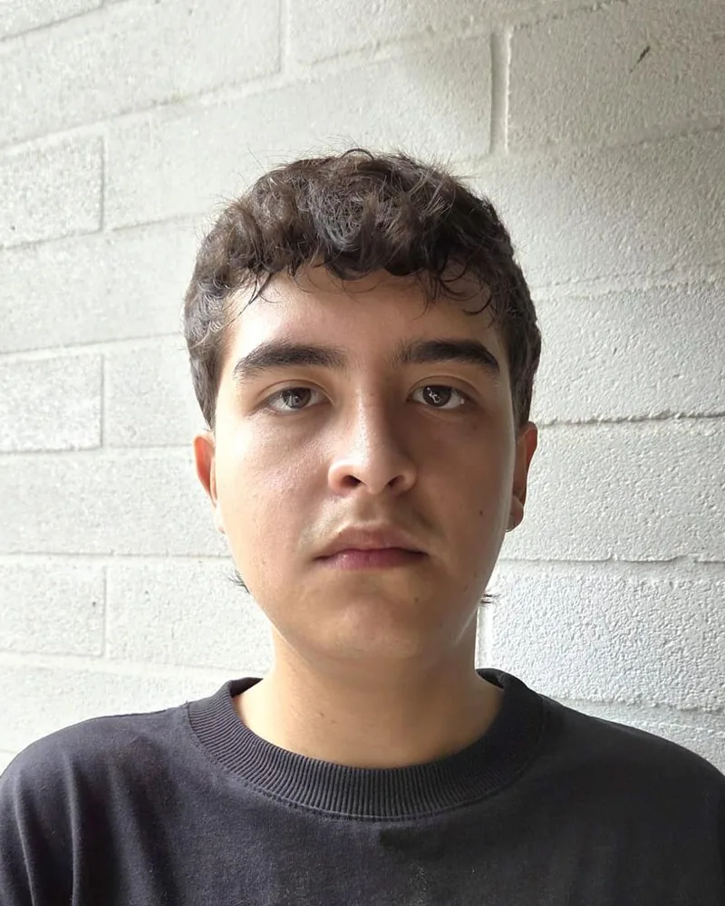

06 / El equipo
Seis disciplinas con una misma intención
Integrantes
-

José Alzate
Diseño visual
Desarrolla el lenguaje visual y los recursos gráficos.
-

Juan José Hoyos Peláez
Diseño sonoro
Desarrolla atmósferas, sonidos y recursos auditivos que construyen tensión.
-
Juan José Machado Miranda
Diseño de experiencia
Se enfoca en el recorrido, las acciones, las decisiones y las interacciones del participante.
-

Pascualtobias Rendón Giraldo
Desarrollo web
Implementa el componente web y las interacciones previstas.
-
Thomas Aguirre García
Desarrollo VR
Implementa el componente de realidad virtual y su comportamiento técnico.
-
Valentina Garzón Pérez
Dirección creativa
Orienta la visión creativa y la coherencia conceptual.
Agradecimientos
Quienes hicieron posible DISSONANCE
- Juan Pedro
Por su asesoría en el desarrollo histórico del proyecto.
- Andrea
Por su acompañamiento y asesoría durante todo el desarrollo del proyecto.
- Equipo de producción de los videos
Por su trabajo en la realización de los videos del proyecto.